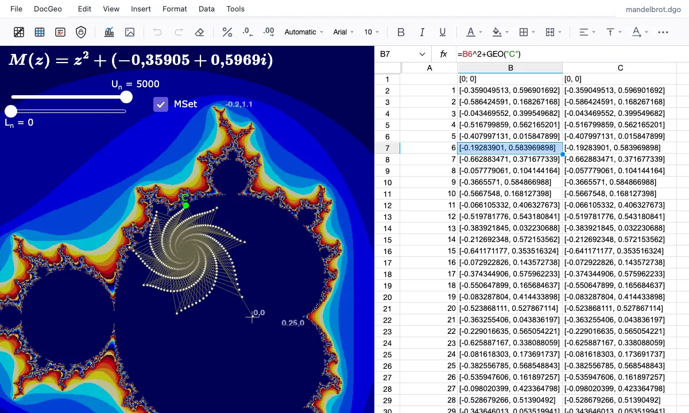

The spreadsheet
A DocGeo tab can hold a worksheet of DocCells, the DocTools spreadsheet: beside the figure, or alone in its own tab. The figure and the cells read each other, live.

In the example above:
-
cells B1 to B3 read the lengths of the triangle’s sides a, b
and c:
=GEO("a")…; - B4 adds them up:
=B1+B2+B3; -
the figure reads this sum back with the line
s = Sheet1!B4.
When A, B or C is dragged, the cells and s follow
during the move.
Adding a spreadsheet
| Action | How |
|---|---|
| Beside the figure | File › View › New spreadsheet view: one more column, on the right, with an empty sheet; the columns take the same width (several views) |
| In its own tab | File › New spreadsheet tab: a tab “Spreadsheet 1”, “Spreadsheet 2”…, holding only a sheet (workbooks) |
| Resize, move | drag the boundary between the columns; File › View › Move view left or Move view right, while the spreadsheet view is active |
| Delete | File › View › Delete the spreadsheet view: the view and its cells disappear, the figure takes the room back. A spreadsheet tab is deleted like any tab. |
- A tab has at most one spreadsheet view: New spreadsheet view is greyed out when it already has one.
- A spreadsheet view shows a single sheet, named “Sheet1”, without sheet tabs. To work on several sheets, create several spreadsheet tabs, which read one another (see below).
- Adding or deleting a spreadsheet view can be undone, like the other actions on views.
The spreadsheet’s menus and buttons
A click or a keystroke in the cells makes the spreadsheet view active. DocGeo’s bars then give way to the spreadsheet’s, at the same height: nothing below moves.
- The menu bar keeps File, followed by the DocGeo menu, then the spreadsheet’s menus.
- The spreadsheet’s button bar (number format, font, bold, colours, borders, alignment…) replaces DocGeo’s action bar.
- The DocGeo menu offers what remains useful: Construction history, Tool palette, Properties, and the User manual.
- Clicking in the figure or in the “Construction” panel, typing a line there, or changing tabs brings DocGeo’s bars back. In a spreadsheet tab, the spreadsheet’s bars stay.
- A spreadsheet dialog (conditional formatting, number format…) veils the whole DocGeo window until it is closed.
The “Construction” panel remains available in a spreadsheet tab (DocGeo › Construction history): an object typed there is computed without being drawn, and the cells of that tab can read it.
When DocGeo is embedded in another page, such as DocTools, it has no menu bar: the spreadsheet keeps its bars at the top of its column.
The figure reads the cells
A formula of the figure names a cell by the sheet’s name, an exclamation mark and the cell’s address, as in a spreadsheet.
| Written | Value |
|---|---|
Sheet1!B3 |
cell B3 |
Sheet1!B2:B21 |
a range of one row or one column: a list of values |
Sheet1!A1:C3 |
a rectangle: a list of rows, each one a list |
'Spreadsheet 1'!Sheet1!B3 |
cell B3 of the sheet of another tab |
A = (Sheet1!B1, Sheet1!B2)
r = Sheet1!B3
L = Sheet1!A1:A10-
The address is written with letters then digits
(
B3,AA12), without$. -
A number, a text or a boolean is read as it is; a date is
read as a number. An empty cell or a cell in error
(
#DIV/0!…) gives an undefined value: the object that reads it is not drawn. - As soon as a cell changes, by an entry or by the spreadsheet’s calculation, the objects that read it are recomputed and redrawn.
- A reference is only part of a formula: it creates no object. A point read from the cells, like A above, is computed: it cannot be dragged with the mouse. To move it, change the cells.
Cells of another tab
The tab’s name comes first, in apostrophes if it contains a
space or a sign, as when
reading another tab:
'Spreadsheet 1'!Sheet1!B3. Its cells are read as
they were computed when that tab was left.
The cells read the figure: GEO
In a cell, the GEO function reads the value of an
object of the figure, named in quotes.
=GEO("c")
=GEO("'Figure 1'!c")
=2*GEO("r")+1- The value is the one a formula of the figure would read by naming the object: length of a segment, value of an expression or a slider, text, state of a checkbox… It follows the figure while it is manipulated.
-
A point or a list cannot be read: first create an
expression, for example
xA = x(A), then=GEO("xA"). -
An unknown or undefined object, or one that is neither a
number, nor a text, nor a boolean, gives
#N/A. The name must be written in the formula:=GEO(A1)gives#VALUE!. -
GEO("'Figure 1'!c")reads object c of another tab: this is how a spreadsheet tab reads a figure. -
GEOhas the same name in every language. It only exists in DocGeo: in DocCells alone, it gives#N/A.
Circular reference
An object read by GEO cannot depend on a cell that
depends on it. If A1 contains
=GEO("m")+1, redefining m with the line
m = Sheet1!A1 is refused: “Circular reference:
Sheet1!A1”.
Likewise, a cell formula that would close a loop with the figure is cancelled with this message, and the cells get their previous content back. In a file that contains a loop anyway, the reading that closes it is undefined.
Undoing and saving
- The cells have their own undo: Ctrl Z in the cells, or the spreadsheet’s menus. DocGeo’s buttons do not undo an entry in the spreadsheet.
-
The cells, their formulas and their formatting are saved
with the figure, in the same
.dgofile. Ctrl S in the cells, or File › Save, saves everything.
For students
The DocGeo player, like a figure embedded in a web page, shows the sheet without its menus or buttons, with its formula bar.
- Students can type in the cells, as in an input field: the figure follows.
- The reset button gives the cells back as they were saved.
- These entries are not part of the student’s answer kept by a page that embeds the figure: only the figure’s objects are.
The spreadsheet is a separate application, loaded only if the
tab shown has one. On a site that hosts its own copy of DocGeo,
the doccells folder must be published beside the
DocGeo folder; otherwise the spreadsheet view shows “⚠
DocCells”, and the rest of the figure works.